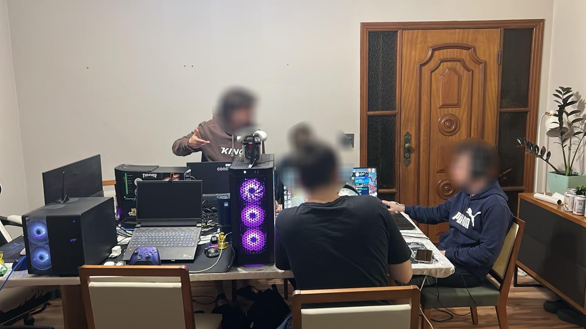

LanParty II
25/07/2026 a 26/07/2026
Em julho de 2026, o grupo realizou a primeira LAN party do Pepino, também na casa do Luiz, com os membros Luiz, Felipe, Leo, Breno, Pedro, Lucão e Lucas. O principal jogo planejado era o GTA Online, para realizar o golpe da galeria de arte. Teve bastante álcool ingerido e, no final, todos ficaram jogando FIFA. Estava todo mundo só o pó... estamos ficando velhos.
Foram distribuídos chaveiros personalizados e exclusivos aos participantes, e quem venceu a competição de quem mais faturou no golpe ganhou um troféu exclusivo.
